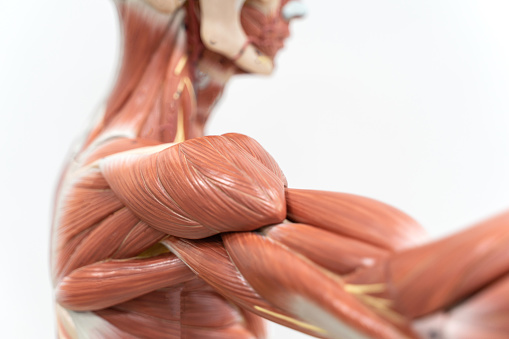
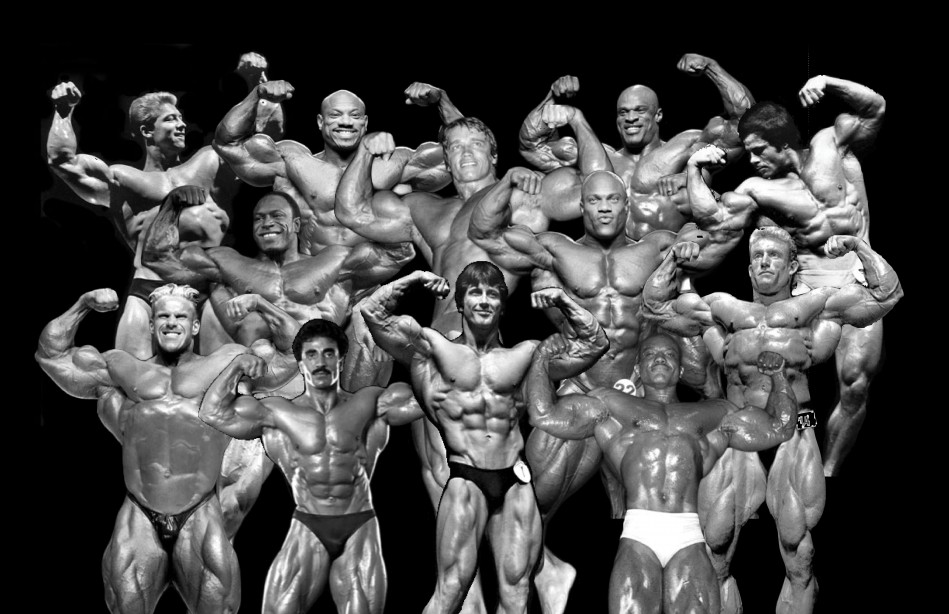
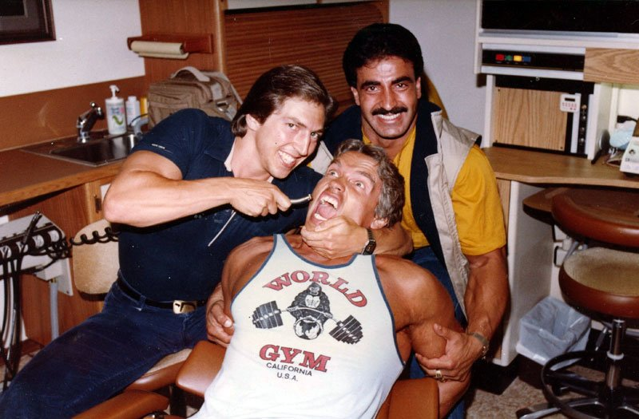
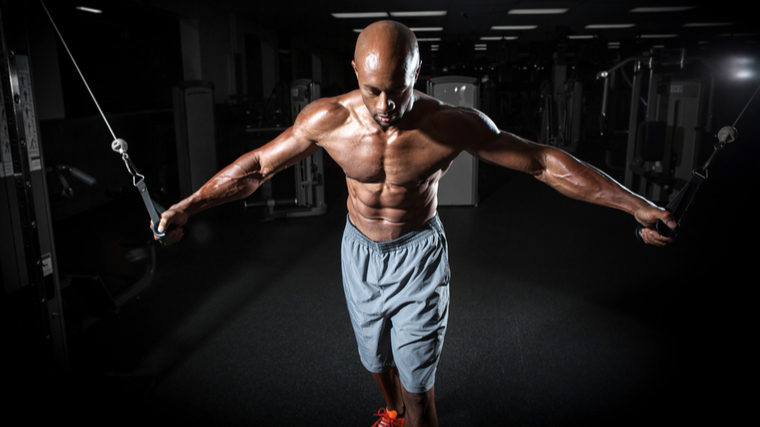
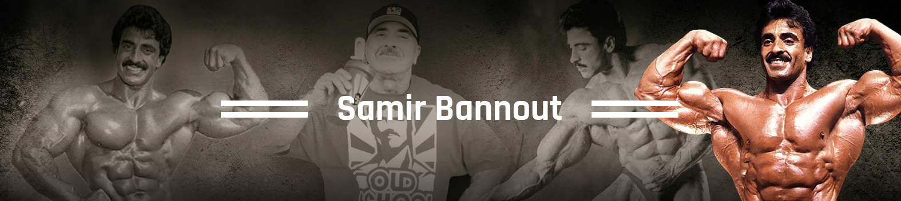
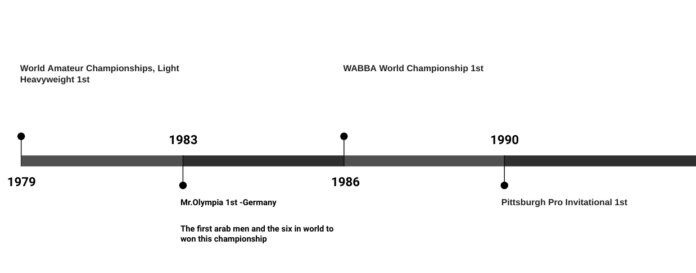

The Importance of
Mind-Muscle Connection
in Bodybuilding

Bodybuilding isn’t just about lifting weights and performing exercises.
Believe it or not, It’s also about using your mind to target, engage
and control the specific muscle groups you’re working on.
Think about it,when you’re at the gym, you’re not just moving
weights around, you’re trying to build muscle.And to do that effectively,
you need to be able to activate the muscle fibers and recruit as
many motor units as possible.This is where mind-muscle connection comes into play.

How Can You Develop a
Better Mind-Muscle
Connection?
You’re ready to integrate more of your mind into your muscle work.
Here are some ways to get an even better pump
and be well on your way to bigger gains.
Choose the Right Exercises
If you’re looking to turn the focus inward, choose single-joint exercises instead of compound ones.
Some research suggests that focusing on your chest during bench pressing makes less of a difference
than focusing on your triceps. (8) So with compound pressing, it might be more effective to focus on
smaller muscle groups.
Perhaps even better, when you’re performing compound lifts, research points to focusing on external cues
rather than internal ones. (1) Think “bar close to body” while deadlifting or “one more rep” during that
endless squat session instead of focusing on your muscles contracting.
Warm Up for Each Exercise
Hopefully, you’re warming up before your overall workout. A dynamic warm-up will help get your blood flowing
and activate the general muscles you need for your training session. In addition to your general warm-up, you
likely have specific warm-ups for your heavy barbell lifts. For example, you may add in a few extra lunges to
open up your hips before squatting. Then, you likely perform ramp-up sets to finish getting warm specifically
for your heavy sets.
The Lion Of Lebanon

Born and raised in Beirut, Lebanon, Samir Bannout ( “The Lion of Lebanon”)
began lifting weights at the age of 16 and earned his first trophy two years later as
the youngest participa in the 1974 Teenage Mr. Universe competition.Soon after this
initial stage experience,he moved to the U.S, where he dedicated himself to training a
nd competing, and earned his pro card by winning the light-heavyweight class at the 1979
IFBB World Amateur Championships. For the next two decades, Samir participated in more
than 50 competitions, including winning the 1983 Mr. Olympia contest in Munich, Germany.,
Renowned in particular for his incredibly developed lower back which was immortalized as the
“Lebanese Cedar, ” Samir was inducted into the IFBB Hall of Fame in 2002, joining such luminaries
as Arnold Schwarzenegger,sergio oliva...
Career Highlights

.png)